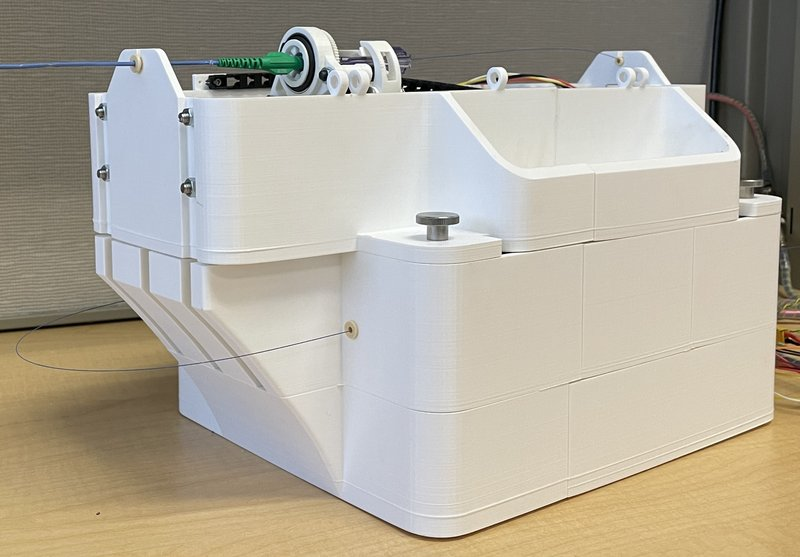

Academic bedside robots · portable_kantu2025
Portable robot
Portable and versatile catheter robot

1 / 9


- Family
- Academic bedside robots (academic)
- Devices
- guide catheter 5-9 F (5 F and 8 F tested) and guidewire 0.33-1 mm (0.36 mm and 0.89 mm tested)
- Degrees of freedom
- 4 (guide catheter T+R, guidewire T+R)
- Push
- Other drives
- Twist
- Rotating clamp
- Tested up to
- Phantom
- Sim-to-real
- None found — No simulation-trained controller found for this robot.
Testing
- Highest level
- Phantom
- What was tested
- benchtop tracking with motion capture; force/torque tests (2 catheters, 2 wires); guidewire advanced to left coronary ostium in a 3D-printed human-heart phantom with EM tracker (one demonstration)
- Key numbers
- peak force 5.49 N (8 F), 3.44 N (5 F), wire 0.38/0.35 N; peak torque 10.61/6.55 mN.m (8F/5F), wire 0.42/0.22 mN.m; tracking RMSE 10.3 deg and 0.31 mm; wire deviation ~6.9 deg / 0.9 mm; 90% smaller than CorPath (1780x690x1170 mm)
Mechanism
- Push (translation)
- other: guide catheter on 1.5 mm-pitch lead-screw platform (300 mm range); guidewire by active friction roller plus spring-loaded passive roller, range > 1200 mm
- Twist (rotation)
- guide catheter: BLDC motor with 2:1 spur gears (360 deg); guidewire: commercial torque device on motor gear train (360 deg)
- Device range
- catheter 5-9 F; wire 0.33-1 mm (abstract: 1-9 F; text: clamp for 0.33-3 mm)
- Target anatomy
- coronary (simulated PCI in 3D-printed heart model)
Sensing and interface
- Force sensing
- motor current; external load cell in bench tests only
- Leader and haptics
- none
- Imaging
- N.R.
- Sterility
- N.R. (cartridge for sterilisation proposed in discussion)
Size
- Footprint (mm)
- 250 x 350 x 250 (abstract; LegoBot Table I writes 360 x 250 x 250)
- Mass (kg)
- N.R. (direct-drive motor 92 g each)
Simulation
- Simulation model
- none found
- Sim-trained controller
- none found
Versions
- Lineage
- 2025 (single version)
Sources
- Portable and Versatile Catheter Robot for Image-Guided Cardiovascular Interventions · IEEE/ASME Transactions on Mechatronics, 2025 · doi:10.1109/TMECH.2025.3559911 [kantu2025_portable]
- LegoBot: Modular, compact, device-agnostic robot for endovascular catheter and guidewire manipulation in stroke thrombectomy · IEEE/ASME Transactions on Mechatronics, 2026 · doi:10.1109/TMECH.2026.3695773 [gao2026_legobot]
Notes
- Notes
- Coupled guidewire translation-rotation per LegoBot Table I; direct-drive 40x28 mm motors 0.15 N.m nominal / 0.33 N.m peak.
This record
- Read level
- full
- Picture
- BIRO Lab, New York University (own photograph) — licence: lab own (BIRO Lab, New York University); grade A
- Found by
- academic: Search of academic bedside robots.
- Data
- JSON · YAML:
records/robots/portable_kantu2025.yaml - Correction
- Suggest a correction [repository not created yet]